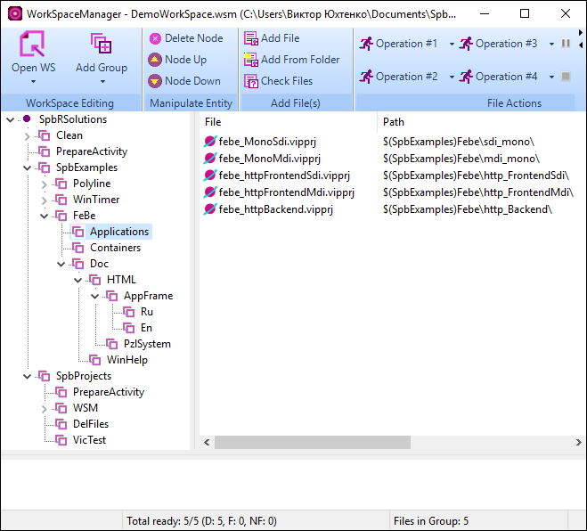
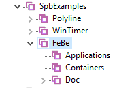
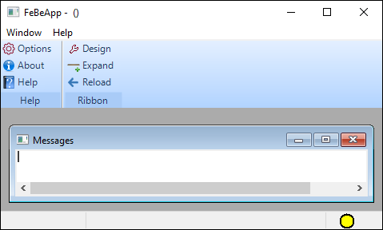
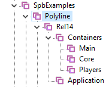
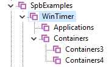
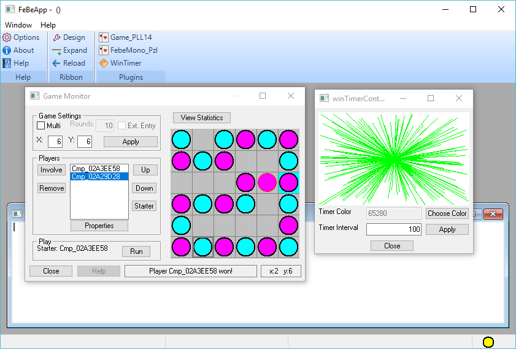
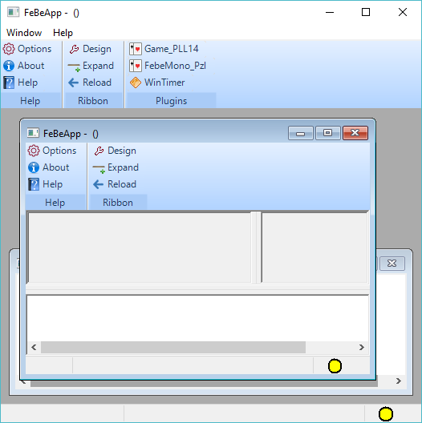

Copyright
(c) Prolog Development Center SPb
AppFrame CookBook
AppFrame. Набор
Демонстрационных проектов.
Список
проектов, которые можно построить с помощью набора
шаблонов AppFrame представлен во введении.
Полный список проектов
демонстрационной версии приведен в директории SpbExamples\Febe.
Каждый из
проектов, кроме исходных кодов, представлен исполняемыми программами в
директории SpbExamples\Febe\Bin.
Построение исполняемых
программ удобно выполнить с использоваием программы SpbVipTools\Bin\WorkSpaceManager.exe - файл данных DemoWorkSpace.wsm?

Проекты
следует построить с использованием последней коммерческой версии VIP.

Исполняемыми
программами, представленными своими пользовательскими интерфейсами,
являются:
- febe_MonoMdi.exe
- febe_MonoSdi.exe
- febe_pzlMonoSdi.pzl
- febe_httpFrontendSdi.exe
- febe_httpFrontendMdi.exe
- febe_pzlHttpFrontendSdi.pzl
Все
программы с точки зрения функций ядра AppFrame полностью
идентичны,
их отличает только либо свойство Mdi/Sdi либо способ запуска (программы
с расширением .pzl являются DLL). Поэтому функциональные свойства будут
показаны на программе febe_MonoMdi.exe.
Первый пуск
Первый пуск
программы febe_MonoMdi.exe производится при отсутствии файла
конфигурации, что соответствует стартовому варианту
панели - default

Конфигурация поля окна
условная. Нижняя часть используется как MessageWindow.
Команды
Help - вызывает
к показу пустую заготовку Help_xx.html любым установленным браузером
About - стандартная информация о
приложении
Options - вызывает диалог
установки свойств приложения
Design - вызывает редактор
расположения панели
Expand - вызывает диалог выбора
xml-файла расширения панели и подключает новый фрагмент панели
Reload - восстанавливает
расположение панели с участием всех подключенных фрагментов
панелей
Среди этих
команд отметим следующие три (остальные интуитивно понятны):
Options, Expand, Reload
Команда Options
Команда Options в
объекте класса fe_Comand вызывает предикат
fe_CoreTasks():editOptions(),
что приводит к появлению диалога редактирования любых свойств элементов
приложения или конфигурации. Этот диалог пустой и лишь задает
возможность поместить туда любой из доступных редакторов.
Возможно,
было бы правильно поместить вызов этого диалога в произвольный
пользовательский класс, но лучшего места в демонстрационном проекте
пока не нашлось.
С этим диалогом связан словарь optionsDlg_Dictionary
и соответствующий xml-словарь, которые должны быть наполнены смыслом
конкретного приложения.
Команда Expand
Команда Expand
вызывает предикат addExtension() объекта
класса fe_CoreTasks,
результат исполнения которого описан на странице Встроенные
функции.
Список
фрагментов xml-панелей включает из директории febe_AppData
- ribbon_Basic.xml
- ribbonConfig.xml
- ribbonFile.xml
- ribbonEdit.xml
- ribbonHelpAbout.xml
- ribbonLanguageRender.xml
- ribbonLanguageStatic.xml
- ribbonPlugins.xml
- ribbonTests.xml
Не
каждый из этих фрагментов выполняет конкретную функцию, но
каждый
из них может быть либо примером, либо основой для дальнейшего
расширения.
Следующие фрагменты
панелей наполнены реальным смыслом
- ribbon_Basic.xml
- повторяет hardcoded панель default
и может быть использована как стартовая для embedded и loadable вариантов старта приложения
- ribbonConfig.xml
- содержит вызов команды создания
словаря
- ribbonLanguageRender.xml
- содержит вызов команды выбора языка
- ribbonPlugins.xml
- содержит команды активации
plugin
- ribbonTests.xml
- содержит команды тестирования взаимодействия FrontEnd и
BackEnd
Демонстрация
вызова plugin
Для демонстрации вызова
PlugIn должен быть подключен фрагмент панели ribbonPlugins.xml.
При
демонстрационной активации plugin используются результаты
построения проектов в директориях
SpbExamples\PolyLine\Polyline14
SpbExamples\vpPuzzle\WinTimer
SpbExamples\Febe\febe_PzlMono.vipprj
SpbExamples\Febe\febe_pzlHttpFroneEnd.vipprj
Проекты SpbExamples\PolyLine\Polyline14 и SpbExamples\vpPuzzle\WinTimer являются агрегацией
нескольких pzl-компонент, размещенных в нескольких
pzl-контейнерах.
Для
удобства построения и активации проектов Polyline14 и WinTimer рекомендуется использовать
приложение WorkSpace
Manager - файл DemoWorkSpace.wsm

Все
компоненты, вызываемые из фрагмента панели ribbonPlugins.xml
уже
зарегистрированы в файле SpbExamples\Febe\Bin\pzlRegistry.pzr.
Внимание!
Комоненты febe_PzlMono.vipprj и febe_pzlHttpFrontEndSdi.vipprj
являются
SDI-компонентами и должны вызываться только из MDI приложения SpbExamples\Febe\Bin\Febe_MonoMdi.exe.


Порядок
запуска демонстрационных приложений
Приложения febe_MonoMdi.exe и febe_MonoSdi.exe
запускаются как обычные исполняемые программы и обладают всей полнотой
функций, выполняющих задачи назначения.
Приложение febe_pzlMonoSdi.pzl обладает
всей полнотой функций, выполняющих задачи назначения, однако, являясь
по своей сути DLL, может быть вызвано:
- из любого MDI-приложения,
поддерживающего соглашения pzl-технологии (см.
пример)
- из любого объекта класса, являющегося pzl-компонентой,
вызванного из MDI-приложения
Приложения
- febe_httpFrontendSdi.exe
- febe_httpFrontendMdi.exe
- febe_pzlHttpFrontEnd.pzl
Являются http-клиентами
и не могут выполнять задачи назначения без http-сервера.
Все перечисленные
клиенты обращаются к http-серверу с ip-адресом http://localhost:5558 ,
в качестве которого должно быть использовано либо приложение febe_httpBackEnd.exe,
либо
pzl-компонент febe_pzlHttpBackEnd.pzl,
подключенный
к любому приложению, поддерживающему pzl-технологию.
Для проверки работы
такой пары клиент-сервер достаточно сначала запустить febe_httpBackEnd.exe
(в режиме администратора), а затем, например, приложение febe_httpFrontendMdi.exe.
Как можно видеть,
функционирование такой пары ничем не отличается от работы приложения febe_MonoMdi.exe.
единственное отличие - появление зеленого индикаторв в правом нижнем
углу, который показывает активность http-сервера.
Если приложение SpbVipTools\Bin\WorkSpaceManager.exe
запустить в режиме администратора, то вызов любого
приложения достаточно тривиален.
У нас нет пока примера
запуска pzl-компоненты febe_pzlHttpFrontEnd.pzl ,
однако его несложно сделать по аналогии с запуском febe_pzlMonoSdi.pzl.